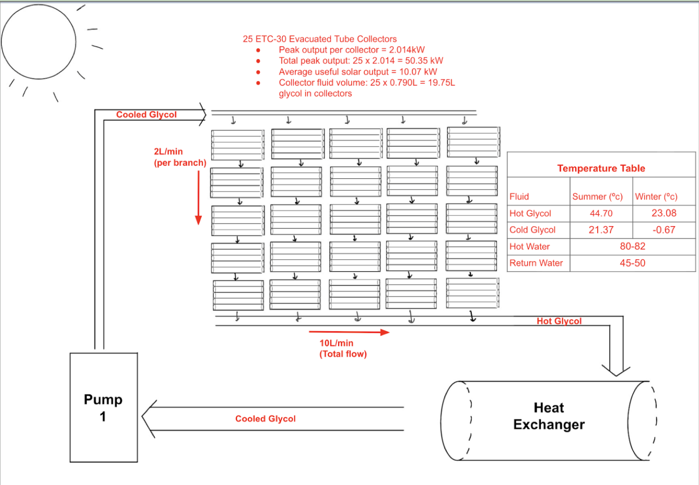
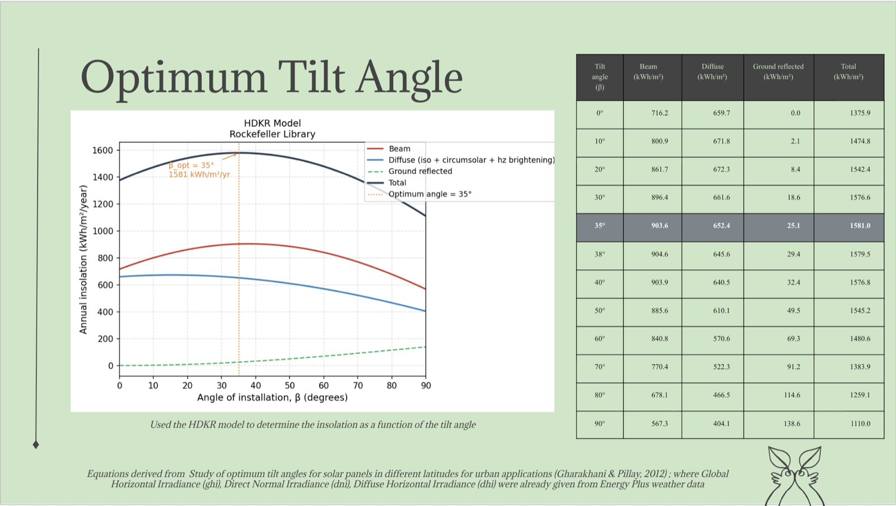
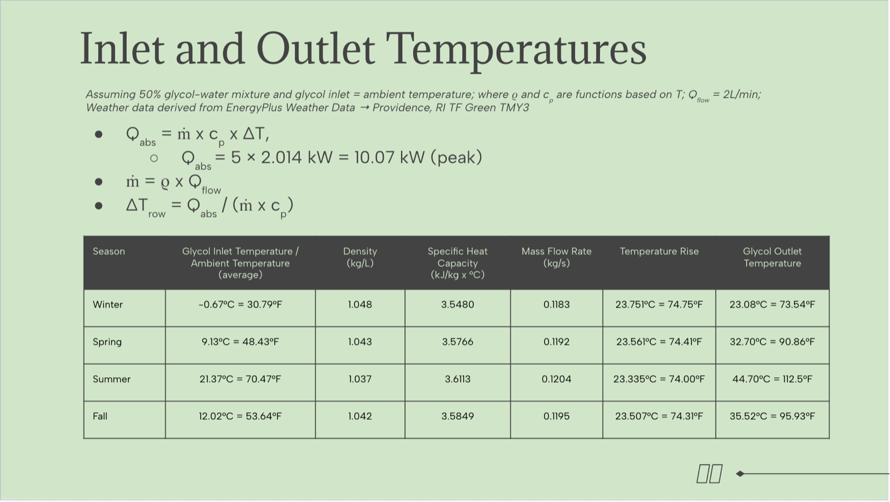
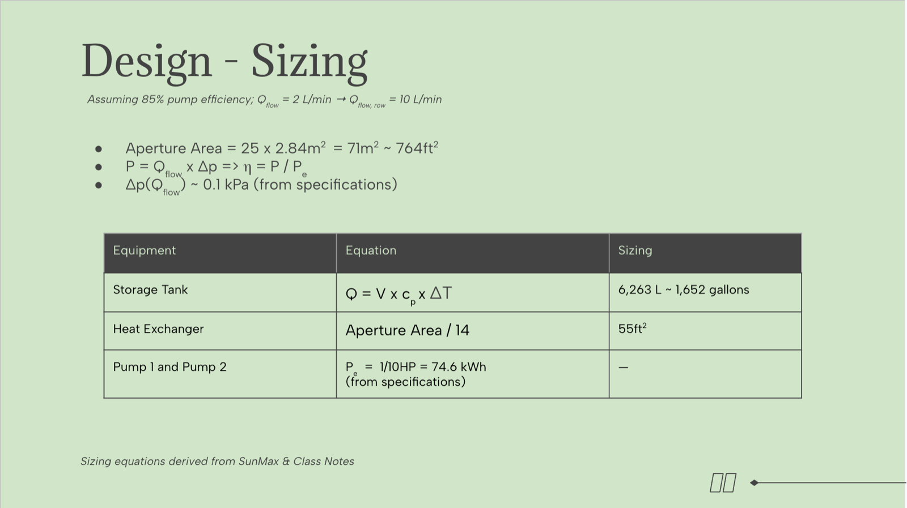

The Rock Goes Green — Solar Panel Design
Five-person thermodynamics final project: designing a solar thermal system to replace the 20 kW natural gas boiler at Brown's Rockefeller Library — "The Rock."

Objective
The Rock's current 20 kW natural gas boiler runs at roughly 50% efficiency. Our goal was a solar thermal system that meets the library's ~87,600 kWh/year heating demand, cuts fossil fuel consumption, and pays for itself in a reasonable period.
Design
The final design uses 25 Apricus ETC-30 evacuated tube collectors in a five-by-five series-parallel configuration on the south-facing roof. A 50% propylene glycol–water loop carries heat through a 55 ft² heat exchanger into a 6,263 L storage tank feeding the building's heating system. Using the HDKR insolation model with Providence TMY3 weather data, we found the optimum collector tilt: 35°, capturing 1,581 kWh/m² per year.



Economics & Impact
The system costs about $64,180 and saves roughly $9,985 per year in natural gas — a 6.4-year payback — while avoiding ~31.6 metric tons of CO₂ emissions annually. Safety measures include relief valves, an expansion tank, freeze protection, and a biodegradable, food-safe working fluid.